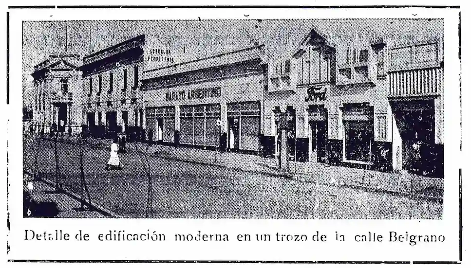

Barato Argentina
Edificación de la calle Belgrano
Nené: "Al maquillarse pensó en las posibilidades seductoras de su rostro y en las distintas opiniones escuchadas sobre el efecto positivo o negativo del sombreado natural de las ojeras. A las 8:30 salió de su casa. Vestía uniforme de algodón azul abotonado adelante, con cuello redondo y mangas largas. A las 8:42 entró en la tienda «Al Barato Argentino». A las 8:45 estaba en su puesto detrás de la mesa de empaquetar, junto a la cajera y su caja registradora. Los demás empleados, veintisiete en total, también se dispusieron a ordenar sus puestos de trabajo. A las 9 horas se abrieron las puertas al público".
Boquitas Pintadas,1968.